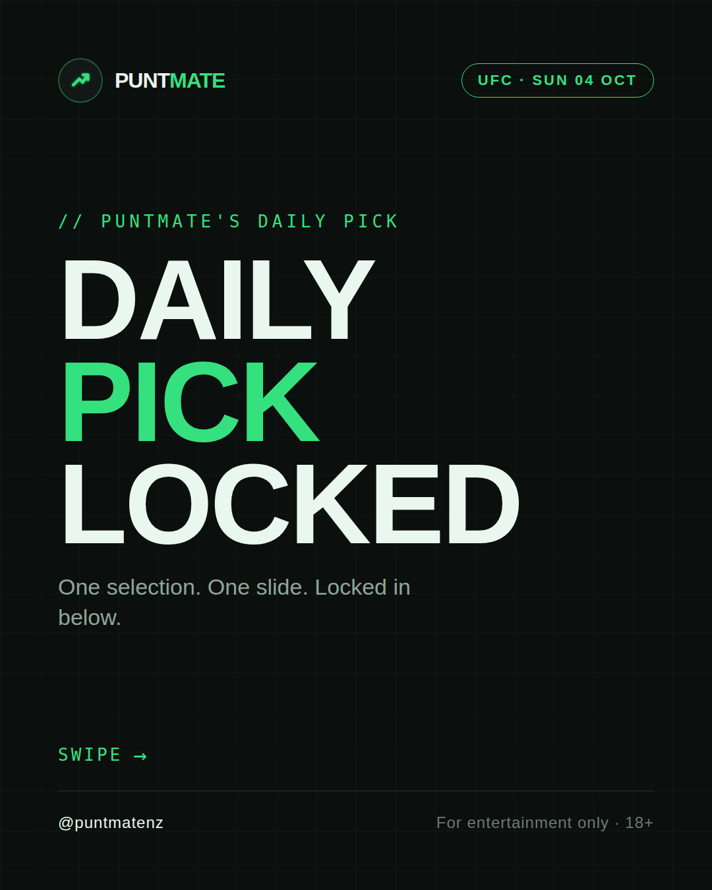
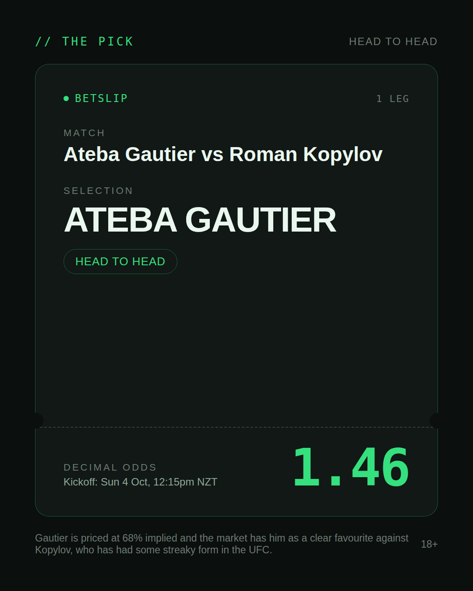
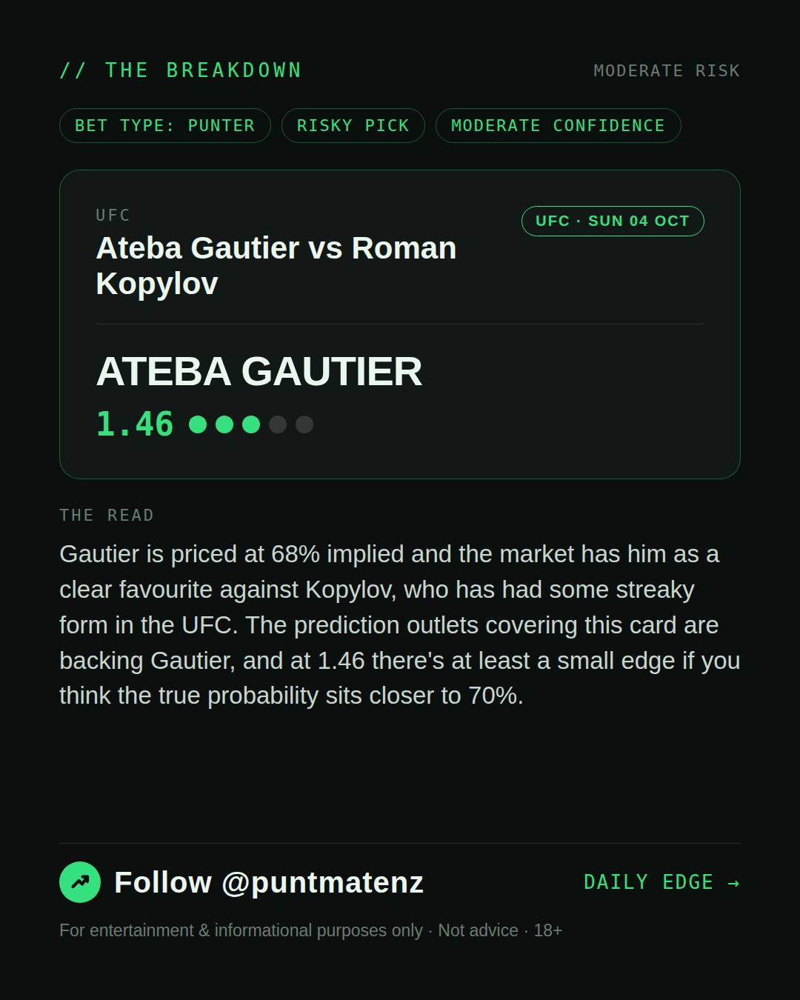
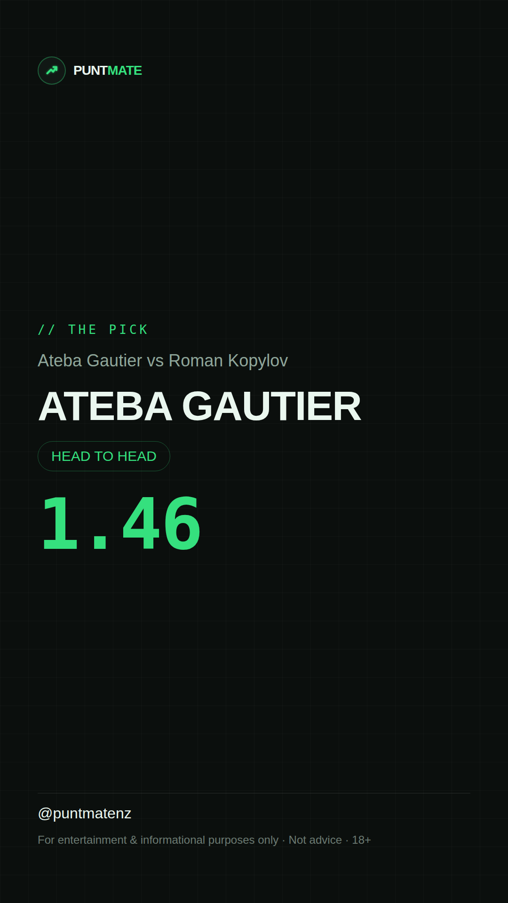

*🎯 PUNTMATE NZ — UFC* 🏟 Ateba Gautier vs Roman Kopylov *PICK:* ATEBA GAUTIER *ODDS:* 1.46 (Head to Head) *BET TYPE: PUNTER* _Gautier is priced at 68% implied and the market has him as a clear favourite against Kopylov, who has had some streaky form in the UFC. The prediction outlets covering this card are backing Gautier, and at 1.46 there's at least a small edge if you think the true probability sits closer to 70%._ ────────────────── 📲 Join Telegram for daily picks ⚠️ For entertainment & informational purposes only. Not advice. 18+.
🎯 UFC — Ateba Gautier vs Roman Kopylov ATEBA GAUTIER @ 1.46 (Head to Head) BET TYPE: PUNTER Solid touch here. Not a lock, but the value's real and the form backs it up. Gautier is priced at 68% implied and the market has him as a clear favourite against Kopylov, who has had some streaky form in the UFC. The prediction outlets covering this card are backing Gautier, and at 1.46 there's at least a small edge if you think the true probability sits closer to 70%. Follow for daily value picks → @puntmatenz ⚠️ For entertainment & informational purposes only. Not advice. 18+. #PuntmateNZ #SportsBetting #NZTAB #UFC
| has_pick | True |
| pick_id | 2026-10-03_Ateba_Gautier_vs_Roman_Kopylov |
| run_id | 37159585415 |
| generated_at | 2026-10-03T22:49:03.056790+00:00 |
| post_date | 2026-10-03 |
| match | Ateba Gautier vs Roman Kopylov |
| sport | mma_mixed_martial_arts |
| sport_label | UFC |
| market | Head to Head |
| selection | ATEBA GAUTIER |
| odds | 1.46 |
| bet_type | PUNTER_BET |
| bet_type_label | BET TYPE: PUNTER |
| bet_type_reason | Solid touch here. Not a lock, but the value's real and the form backs it up. Gautier is priced at 68% implied and the market has him as a clear favourite against Kopylov, who has had some streaky form in the UFC. The prediction outlets covering this card are backing Gautier, and at 1.46 there's at least a small edge if you think the true probability sits closer to 70%. |
| classification | RISKY_PICK |
| risk | RISKY_PICK |
| confidence | MODERATE |
| confidence_label | MODERATE |
| final_explanation | Gautier is priced at 68% implied and the market has him as a clear favourite against Kopylov, who has had some streaky form in the UFC. The prediction outlets covering this card are backing Gautier, and at 1.46 there's at least a small edge if you think the true probability sits closer to 70%. |
| public_caution | Keep this one light — the value's there but so is the uncertainty. |
| theme | night |
| carousel_paths | ['data/review/2026-10-03_Ateba_Gautier_vs_Roman_Kopylov/cover.png', 'data/review/2026-10-03_Ateba_Gautier_vs_Roman_Kopylov/tip.png', 'data/review/2026-10-03_Ateba_Gautier_vs_Roman_Kopylov/breakdown.png'] |
| carousel_urls | ['https://raw.githubusercontent.com/kingofthecastle24/puntmate/main/data/cards/2026-10-03_Ateba_Gautier_vs_Roman_Kopylov_night_1_cover.png', 'https://raw.githubusercontent.com/kingofthecastle24/puntmate/main/data/cards/2026-10-03_Ateba_Gautier_vs_Roman_Kopylov_night_2_tip.png', 'https://raw.githubusercontent.com/kingofthecastle24/puntmate/main/data/cards/2026-10-03_Ateba_Gautier_vs_Roman_Kopylov_night_3_breakdown.png'] |
| story_path | data/review/2026-10-03_Ateba_Gautier_vs_Roman_Kopylov/story.png |
| story_url | https://raw.githubusercontent.com/kingofthecastle24/puntmate/main/data/cards/2026-10-03_Ateba_Gautier_vs_Roman_Kopylov_night_story.png |
| intended_platforms | ['telegram', 'instagram_feed', 'instagram_story', 'facebook'] |
| workflow_state | GENERATED |
| has_punter_multi | False |
| has_gambler_multi | False |
| has_degenerate_multi | False |